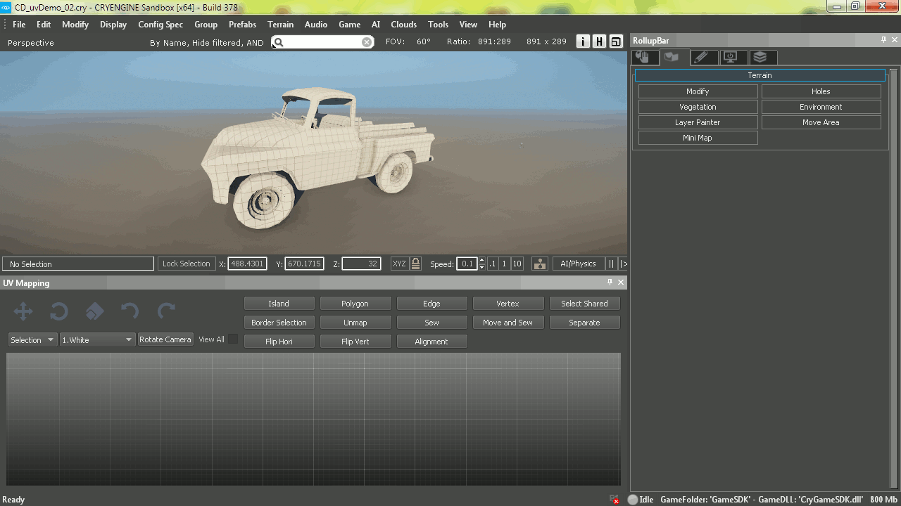

Released 26th August, 2015
Overview
Release Highlights
Designer Tool UV Mapping
The Designer tool gets its own UV Mapping Editor. This is designed to provide easy and powerful ways to define UV's of a designer object like one built in Maya, 3D Max or Blender etc.
Character Attachment Merging (Shadows)
In CRYENGINE, characters consist of many discrete parts (=attachments) all tied together via the skeleton. While this approach provides a great deal of flexibility, it makes rendering quite expensive as each part needs to be rendered individually. So we have optimized shadow rendering in a way where all attachments are merged into a set of large meshes which can be rendered with one draw call each.
Code Interface Changes
See the Important 3.8.3 EaaS Code and Data Changes article for more information
Editor Update
In this release there has been an update to some of the Editor resource files. Hence, if you have updated to the latest build and find that some of the inputs are no longer working (for e.g. Ctrl+G to jump in-game), then go to the tools menu\Clear Registry Data. This will reset everything to the current system.
Editor
Editor General
- New: User can specify to not 'Auto update all instances' of a prefab if they wish - this is useful in some situations for e.g. editing large FlowGraphs. Default behavior = 'Auto update' ON
- Fixed: SplineDistributor can now be hidden (CE-6687)
- Fixed: New level - on creation, make an objectives.xml. Removes warnings in editor log (CE-6560)
- Fixed: Fixes to the the shape object to allow game volume classes to decide whether they want a zOffset and for better control if they allow closing of the shape
- Fixed: Archetype entity in a prefab with a problem which is not loaded in the entity library (CE-3690)
- Fixed: Removes group in Prefab library if all group items have been removed (CE-6411)
- Fixed: Fixed resource selector not respecting read-only flag in QPropertyTree
- Tweaked: Changed Vegetation Tool 'UseSprites' checkbox to be unchecked by default. Sprites are no longer supported (CE-6907)
- Tweaked: Only brushes need to notify the NavMesh of upcoming changes to their AABB (CE-6885)
Designer Tool

- New: UV Mapping Editor has been added - UV Mapping Editor(Manual)
- Refactored: Code for Smoothing Group Tool has been refactored
- Refactored: PolygonDecomposer class has been refactored - improves the quality of triangulation by giving a small rotation offset to each point. Comparison functions used in PolygonDecomposer have also been tidied up
- Refactored: Vertexoffset and faceoffset in PolygonDecomposer which are no longer needed have been removed
- Refactored: CreateShapesScripts has been renamed to ShapeScripts
- Refactored: FillSpaceTool has been renamed to FillTool
- Refactored: SubdivisionModifier has been renamed to Subdivision
- Refactored: BooleanCompiler.cpp has been renamed to Boolean3D.cpp
- Refactored: 'Brush' Prefix in file names has been removed
- Refactored: Moved JoinTwoMeshes() and FillMesh() function into FlexibleMesh class
- Refactored: All classes have been enclosed by Designer:: namespace
- Refactored: Replaced CD:: namespace with Designer::
- Refactored: GetDesigner() has been renamed to GetEditor()
- Refactored: DesignerTool has been renamed to DesignerEditor
- Fixed: Not sticking to the grid has been fixed (CE-6828)
- Fixed: Incorrect display by 0.002m for width, height and depth on screen has been fixed (CE-6825)
- Fixed: Fixed a broken viewport - after switching to 2D viewport and coming back to a 3D viewport in Exclusive mode (CE-6893)
- Fixed: The copied selected faces is now automatically set to 'Islolated' so that it can be moved separately without holding SHIFT
- Fixed: A crash - caused by trying to move an edge holding SHIFT (CE-6755)
- Fixed: Lathe Tool - not removed, newly created bottom polygons in contact with the existing polygons
- Fixed: Lathe Tool - incorrect lathe result - caused when a profile polygon is located at the end of a line segment
- Fixed: Shrunken scale gizmo - when vertices or edges are selected whose positions are balanced
- Fixed: An infinite loop bug of the loop selection tool
- Fixed: A bug in the Fill tool has been fixed
- Tweaked: Unnecessary code for calculating a boundbox for a static mesh has been removed
- Tweaked: Improved SHIFT movement of selected elements. Now vertices and edges can be moved holding SHIFT
- Tweaked: Added QMaterialComboBox class to list all sub material items
- Tweaked: Improved clip volume shape using a render mesh
Trackview
- Fixed: SceneCapture nodes were not working properly (CE-6707)
- Fixed: RenderOutput will start all clips when capturing starts
- Fixed: Framerate set in RenderOutput - doesn't affect the output clip
- Fixed: Render Output crashes/freezes the Editor - no output files created (CE-6653)
- Fixed: Editor was crashing when Trackview nodes were receiving (un-)expanded keyboard input (CE-6377)
- Fixed: Child entities stay permanently hidden when scrubbing past the visibility track (CE-6942)
- Tweaked: Removed unsupported frame capture formats (bmp, hdr) and buffer types (CE-3383)
- Tweaked: Disabled render buffer output drop-down (only color mode is currently supported)
Renderer
Renderer General
- New: Character attachment merging for reduced drawcalls in shadow map generation
- New: Enhanced auto-exposure mode that works with EV, toggled with r_HDREyeAdaptationMode (Experimental)
- New: Sun intensity is now specified in lux, sun color does not influence intensity (existing values get converted for backwards compatibility)
- New: Added DensityNoiseTimeFrequency parameter to FogVolume entity
- New: Added two new Lightstyles (49/50) to simulate large and small open flame variations
- New: Added r_WindowIconTexture CVar to control the window icon set by the renderer (CE-6752)
- Refactored: Removed extra glow pass - emissive surfaces now get handled in a forward pass to ensure correct rendering order
- Refactored: Make cube and sphere unit meshes part of unit mesh list
- Refactored: Fix indentation for ECGS_Shadow in mfSetSamplers
- Refactored: Removed deferred clip bounds from light entities. Functionality has been superseded by ClipVolumes
- Fixed: Division by 0 for r_stats=16 in combination with t_scale=0
- Fixed: NaNs in frustum volume vertex shaders used for shadows (CE-6579)
- Fixed: Fixed compile error in NULLRenderAuxGeom for release build
- Fixed: Division by zero in ECGP_PI_OSCameraPos - avoids matrix inversion when object matrix is not invertible
- Fixed: Fixed dissolving issue between LOD's (in some rare cases)
- Fixed: Fixed decals receiving self-shadowing on terrain (CE-6698)
- Fixed: CUIEntityTag usage example - fixed first-frame flickering (CE-5899)
- Fixed: Added multi GPU support to voxel-based volumetric fog
- Fixed: Fix for rare floating point exception - clear depth readback rendertarget after creation
- Fixed: Stencil culling for area light shadows
- Fixed: Black main menu when returning from level
- Fixed: Unaligned reads in CRenderMeshMerger caused by CRenderMesh::GetNormPtr returning -1 instead of NULL when the stream element is not present (-1 since 1251994). Fixed GetColorPtr, GetUVPtrNoCache, GetUVPtr (CE-6855)
- Fixed: Thread safety for breakable objects' hidemasks (CE-6910)
- Tweaked: Enable increasing saturation using TOD controls
- Tweaked: Better default values for TOD parameters that work with the expected sun intensities
- Tweaked: Adjusted r_HDRDebug 1
SVOGI (Experimental)
- New: Improved occlusion and indirect shadowing quality
- New: Added basic support for dynamic omni lights
- Refactored: Indoor sky light system - enabled for secondary bounce
- Refactored: Removed some unnecessary UI parameters - added emissive and occlusion amount, added VegetationMaxOpacity and TranslucentBrightness
- Fixed: Dynamic projectors support
- Fixed: Debug views
- Fixed: Projector light injection shadow test
- Fixed: Cubemap generation when SVOGI is in use
- Fixed: Indoor sky lighting for specular
- Fixed: Missing textures in voxelization in Game Launcher
- Fixed: Fixed culling for dynamic projectors
- Fixed: RSM gen culling and portal lighting
- Fixed: Multi GPU flickering
Engine
Engine General
- Fixed: DynArrays of different types could be copied clearing the destination array - created internal types array and const_array for clearer code
- Tweaked: Set CUSTOMEVENTS_PREFABS_MAXNPERINSTANCE from 6 to 12
Physics
- Refactored: Added comments for special values in GetPhysicalEntityById (CE-6797)
- Fixed: Geom_no_coll_response contacts with players
- Fixed: Issues with geom_no_coll_response handling with rigidbodies (CE-6832)
- Fixed: Deadlock when querying large area status (CE-6672)
- Fixed: Rigidbody mass with multiple node proxies
System
- New: Updated InterlockedSList to support InterlockedPushListSList and RtlFirstEntrySList used by BucketAllocator
- Refactored: All implementations of BucketAllocator now use atomic SList
- Fixed: Blocking job information off-screen in Profile 3 and 4 debug views (CE-6665)
3D Engine
- Fixed: Set material flags after they have been extended by the loader (CE-5542)
- Fixed: Fixed corrupted proxies array (CE-6502)
- Fixed: Fixed stalls on materials update (CE-6311)
Particles
- Fixed: More particle-geometry attachment fixes - recompute extents when Character configuration changes
- Fixed: Serialization save/load game fixes - emitter active/inactive state properly recreated. Existing emitters updated on game load rather than recreated. Deprecated ePEF_Independent flag - now serialize all non-referenced emitters and now a log warning for immortal independent emitters, rather than skipping
RC/Tools
Tools General
- New: Added teleportation user marker (CE-6815)
- New: Added loading support for all TIFF encodings writable by Photoshop
- New: FBX: Support Y-up axis export (CE-6138)
- Refactored: Deleted obsolete CryEngine's XSI exporter
- Fixed: Fixed Maya/Collada .cga exporting/converting (CE-6801) (CE-6779)
Resource Compiler
- New: Added greyscale+alpha loading support for TIFFs
- New: Added planar loading support for TIFFs
- New: Enable DPCM deflate compression for TIFFs
- Optimized: Optimized TIFF-update routine - copies raw TIFF data instead of decoding+encoding
- Fixed: Fixed memory corruption in InterpolateMotionDeltaPredictor() (CE-6881)
Animation
Animation General
- Refactored: Introduced the constant ISkeletonPose::kForceSkeletonUpdatesInfinitely which you can pass to ISkeletonPose::SetForceSkeletonUpdate() (this is equal to 0x8000, (which was a hidden feature before). See ICryAnimation.h for more information.
- Fixed: Attachments - parent-space (aka relative) attachment locations are now properly initialized
Character Tool
- Fixed: Fixed anim event players being reinitialized every time scene parameters change
- Fixed: Fixed slow import of animations (CE-6720)
- Fixed: Fixed crashes when changing an example animation in a blendspace that is referenced in a pseudo-example and when creating pseudo examples (CE-6730)
- Fixed: Secondary Animation - attachment's last simulated position stays when simulation is disabled (CE-6395)
- Tweaked: Changed default foley/footstep library settings
Mannequin
- New: Added the ability to change tags for multiple fragments at the same time. To do this, multi-select multiple fragments and press Edit. The common tags will appear underneath the fragment browser where you will be able to edit them all at once (CE-5972)
- New: Added 'Force Skeleton Update' check box on animation clips. Use this to force a skeleton pose update while this animation is playing, even when the character is invisible. (maps to CA_FORCE_SKELETON_UPDATE; See CryCharAnimationParams.h for more information)
- Fixed: Crash in MannUtils::GetHistoryFromTracks
- Fixed: Show tags of selected fragment setup (CE-6842)
Action
Action General
- New: Expose whether a game volume is closed to the game (that info was only previously available to the Editor) and added some notifications to the entity when that property is changed
- Fixed: Logic:Any node forwards 'empty' values on initialization
- Fixed: Trackview play speed in Animations:PlaySequence fg node (CE-5668)
- Fixed: Vehicles are no longer server authoritative by default in multiplayer (CE-4047)
- Fixed: Fixed a crash when loading game volumes. Also, now properly stores the new 'closed' attribute when reading the level's data (CE-6778)
- Tweaked: Adjusted amount of events for prefab instance node
Flowgraph
- New: Improved constraint flowgraph help hints
- New: Connected input flownode ports now show their default values in brackets (until they're invalidated by a new value in the debugger)
- Fixed: Crash from CFlowNodeEntityMaterialShaderParams
- Fixed: Use an epsilon relative to the magnitudes involved when using the FG node MoveEntityTo
- Fixed: Unsafe math in CFlowNode_CosInverse to avoid crash from designer use
- Fixed: Cleaned up collision listener nodes
- Fixed: DebugMessage node so it displays correctly in stereo mode
- Fixed: Logic:Any wasn't forwarding flowgraph debug data to triggered ports correctly
Audio
Audio General
- New: Introduced new ATL interface methods PlayFile and StopFile that allow for addressing stand alone audio files
- Refactored: SATLWorldPosition optimized to store 3 vectors only instead of a matrix
- Refactored: SATLWorldPosition is now called CAudioObjectTransformation
- Fixed: Fixed crash when s_AudioSystemImplementationName was set to an invalid value
- Fixed: ATL reports that control data from being loaded twice
- Fixed: Fixed Wwise motion working in Editor and Launcher - have introduced two new interface methods to IAudioSystemImplementation, GamepadConnected and GamepadDisconnected (CE-6136)
- Fixed: Initialize oPosition in SQueuedAudioCommand with an identity matrix to avoid error messages in debug builds when the struct is copied
- Fixed: Fixed Lua script that was still referencing the old music system (CE-6886)
- Fixed: Fixed deadlock in ATL when removing a listener in a blocking manner - with this set the reserved size for audio objects and events is 256 on all supported platforms. Also added asserts to AudioSystem interface methods to be notified if those are not called from the main thread (CE-6523)
- Fixed: Fixed where the ATL reported leftovers on AudioObjects that were about to be released
- Fixed: Fixed problem with SDL Mixer stopping events
- Fixed: Fixed where audio type area scripts did not enable raycasting on start (CE-6763)
- Fixed: DeviceDisconnected Event was sent on startup for deactivated devices (CE-6868)
- Tweaked: Removed non-required includes from CryAudioImplWwise.cpp and CryAudioImpl_sdlmixer.cpp
- Tweaked: Removed remains of obsolete music system (CE-6420)
- Tweaked: We now allow hidden entities to produce and update audio specifics. To fully disable audio on an entity have introduced new extended entity flag ENTITY_FLAG_EXTENDED_AUDIO_DISABLED (CE-5225)
- Tweaked: Supplemented documentation of ATL interface methods PlayFile and StopFile
- Tweaked: Compiling SDL Mixer on Linux
ACE (Audio Controls Editor)
- Refactored: Remove dependency to IEditor so 3rd parties can build ACE plugins
- Fixed: States are not duplicated when added to a new switch (CE-6831)
- Fixed: Don't delete control when pressing Delete while editing control name (CE-6764)
- Fixed: Fixed crash when deleting connections (CE-6766)
- Fixed: Move registration of enums to .cpp file
- Fixed: Dirty flags cleared when changing audio implementations (CE-6689)
AI System
- Refactored: Cleaned up usage of ray-cast flags by various AI systems so that these can be exposed outside of the AI DLL
Game
- New: AnimEventPlayer example implementation for the GameSDK
- Fixed: Create water ripples when swimming (CE-5868)
- Fixed: Void System crash when using non-character models (CE-6754)
- Fixed: GameSDK_Server.exe inside Bin folder - which uses pure game dlls (without DEDICATED_SERVER define)
- Fixed: Show debug output whenever i_debug_zoom_mods is enabled and not just when firing (CE-5920)
- Fixed: Fixed incorrect tread material animation, added the possibility to have treads deformed by physics even on non-moving vehicles
- Tweaked: Rename Objectives_new.xml to Objectives_global.xml